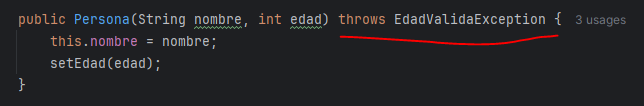
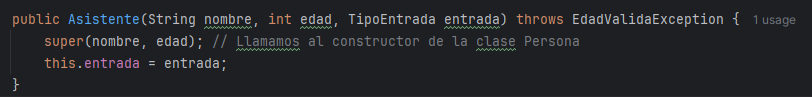
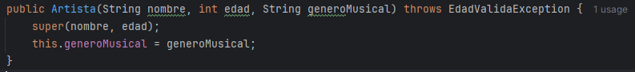
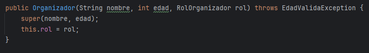
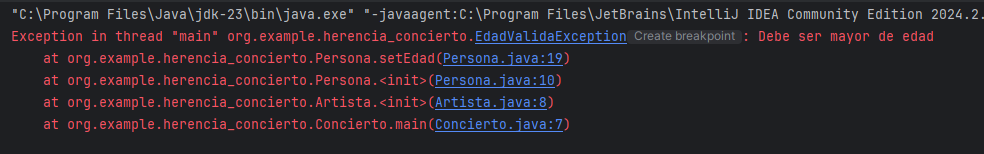
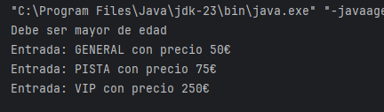

Para familiarizarnos un poco más con las excepciones personalizadas, vamos a añadir a nuestra clase Persona la posibilidad de lanzar una nueva excepcion EdadValidaException que sea capaz de saltar si intentamos añadir a alguien menor de edad al evento del Festival.
Para ello, crearemos una clase nueva EdadValidaException que herede de Exception:
public class EdadValidaException extends Exception {
public EdadValidaException(){
super("Debe ser mayor de edad");
}
}Y desde la clase Persona, modificaremos el constructor actual para que la edad se asigne a través del set(). Además, recuerda que como el set es probable que devuelva una excepción, deberemos incorporar en la cabecera del constructor throws EdadValidaException:

El set quedará de la siguiente manera:
public void setEdad(int edad) throws EdadValidaException {
if (edad<18) throw new EdadValidaException();
this.edad = edad;
}A raíz de este cambio, empezarán a "chillarnos" las subclases Asistente, Artista y Organizador que heredan el constructor de Persona. Deberemos añadir en la cabecera del constructor de cada una de ellas la coletilla throws EdadValidaException:



Ya estamos listos. Vamos a forzar la excepción desde nuestro programa principal...
public class Concierto {
public static void main(String[] args) throws EdadValidaException {
Persona artista = new Artista("Sofía", 15, "Rock Alternativo");
Persona asistente = new Asistente("Lucas", 18, TipoEntrada.GENERAL);
}
}
Comprobamos que funciona, pero en nuestra aplicación no nos interesa obtener un error, solamente que nos informe del error cometido. Por lo tanto, controlaremos nuestra propia excepción con un try-catch.
public class Concierto {
public static void main(String[] args) {
try{
Persona artista = new Artista("Sofía", 15, "Rock Alternativo");
Persona asistente = new Asistente("Lucas", 18, TipoEntrada.GENERAL);
} catch (EdadValidaException e){
System.out.println(e.getMessage());
}
}
}

NOTA: cuando se controla la excepción de esta manera no es necesario indicar throws EdadValidaException en la cabecera del método que vaya a provocarla.